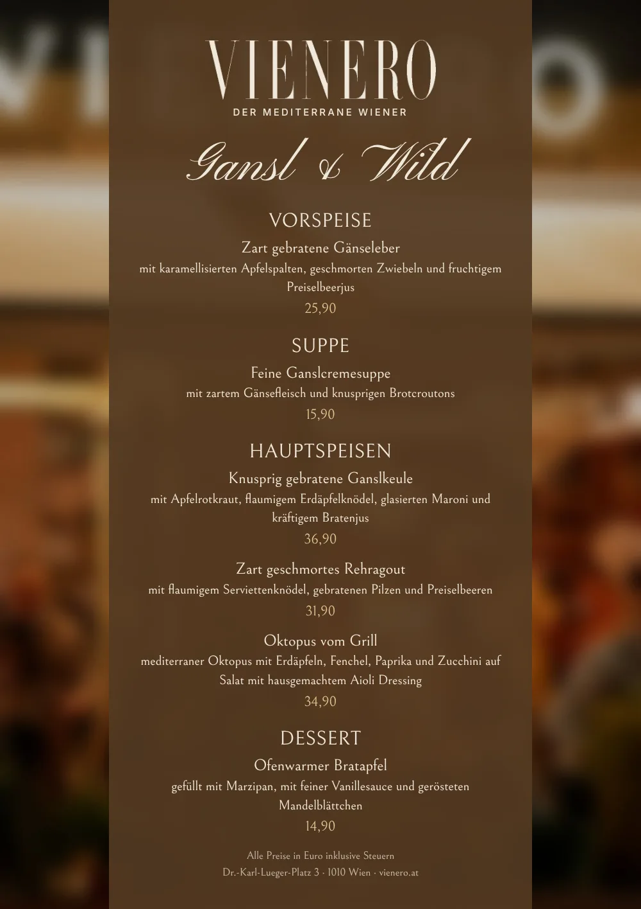
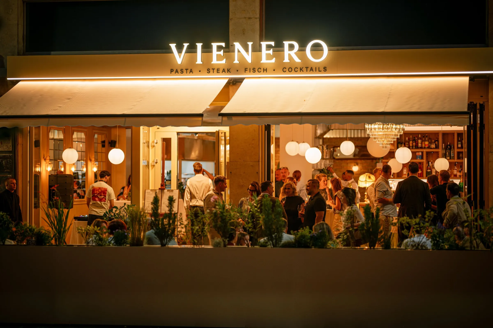
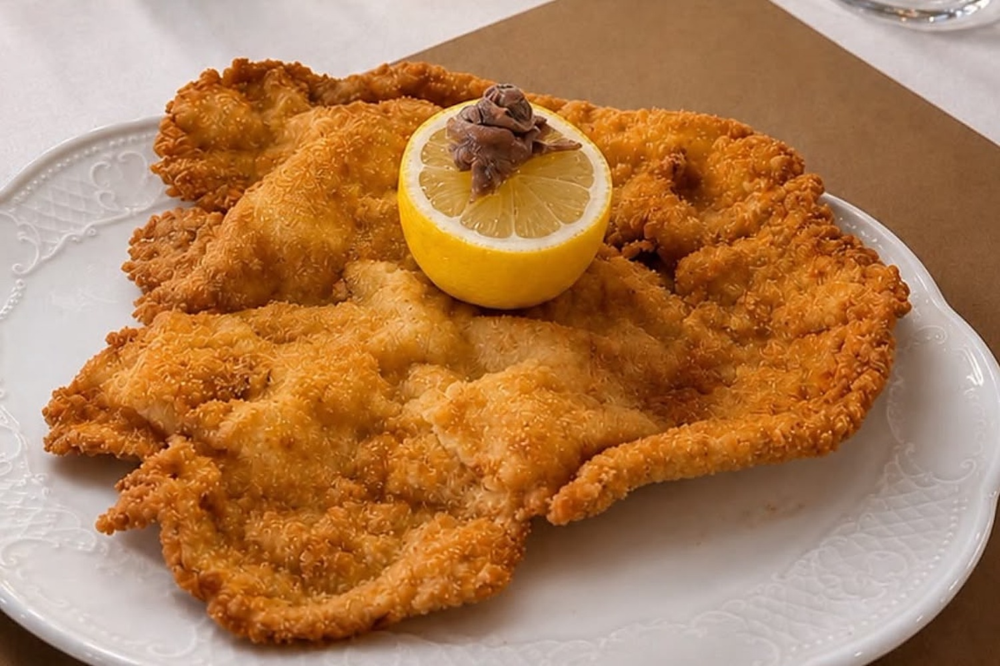
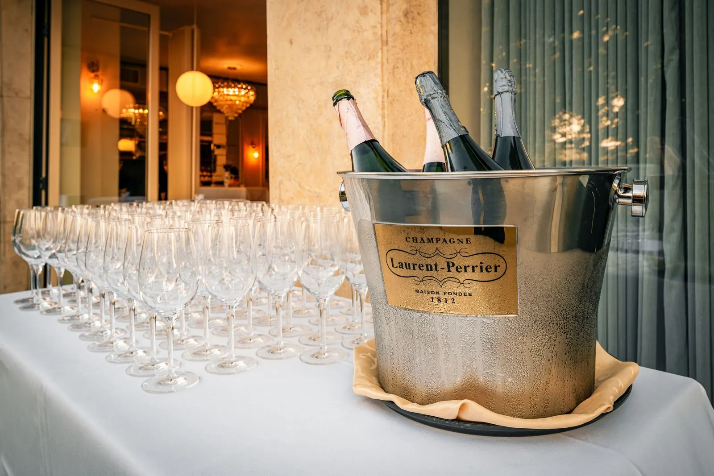
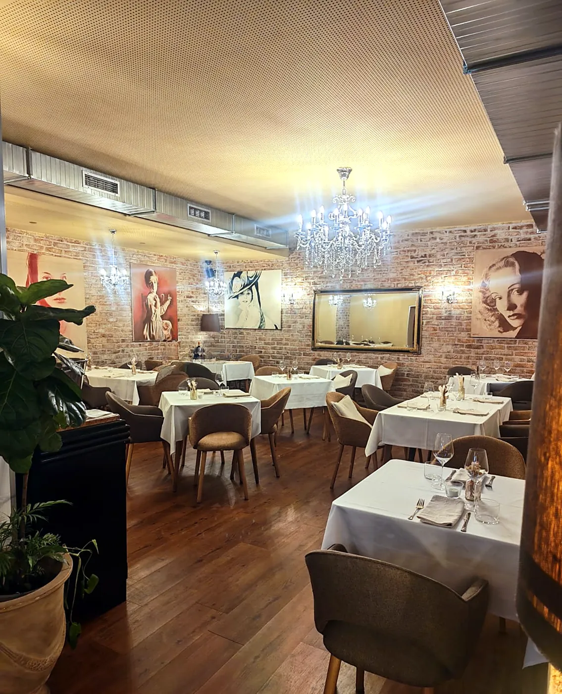

November 2026
Gansl und Wild
Knusprige Ganslkeule mit Apfelrotkraut und Maroni, Ganslcremesuppe, Gänseleber, Rehragout und zum Abschluss ein ofenwarmer Bratapfel. Nur bis Ende November.
Mehr Details
Willkommen im VIENERO
Unter Kristalllustern und warmem Licht kochen wir die Wiener Klassiker und das Beste vom Mittelmeer. Mittags und abends, jeden Tag. Und wenn die Küche schließt, geht es an der Bar weiter, bis Mitternacht.

Goldbraun und luftig
vom Kalb
In soufflierter Panade herausgebacken, mit Petersilienkartoffeln und auf Wunsch Preiselbeeren. So, wie es in Wien sein soll.
Mehr erfahren
Frisch gehobelt
mit schwarzem Trüffel
Cremige Pasta mit Trüffelbutter und Parmesan, darüber schwarzer Trüffel. Falstaff zählt sie zu den besten Trüffelgerichten Wiens.
Mehr erfahren
Bis Mitternacht
Signature Cocktails und Wein
Ein Aperitif vor dem Essen, ein Glas Wein danach oder einfach der Abend an der Theke. Weine aus Österreich, Frankreich und Italien.
Zur BarDas Beste aus Küche und Saison

November 2026
Knusprige Ganslkeule mit Apfelrotkraut und Maroni, Ganslcremesuppe, Gänseleber, Rehragout und zum Abschluss ein ofenwarmer Bratapfel. Nur bis Ende November.
Mehr Details
31. Dezember 2026
Ein festliches Menu mit Auster, Hummer und Rinderfilet Rossini, Champagner um Mitternacht und danach DJ bis 2 Uhr früh. 169 € pro Person.
Mehr Details
Feiern und Gruppen
Geburtstag, Hochzeit oder Firmendinner: Bis 70 Gäste im ganzen Lokal oder bis 40 im eigenen Bereich, mit einem Menu nur für Sie.
Feier anfragen